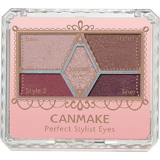

返回列表
产品名称：キャンメイク パーフェクトスタイリストアイズ １８ ビタースウィートメモリー

井田ラボラトリーズ キャンメイク パーフェクトスタイリストアイズ １８ ビタースウィートメモリー ＿
メーカー 井田ラボラトリーズ
JANコード 4901008310459
商品の特徴
メインカラーを変えることで、２パターンメイクが楽しめる５色のアイシャドウパレットです。
中央のラメをお好みでトッピングすれば、更にメイクの幅が広がります。
成分・分量
【成分】
スクワラン、リンゴ酸ジイソステアリル、メチルパラベン、ブチルパラベン、トコフェロール、シリカ、ステアリン酸亜鉛、タルク、マイカ、合成フルオロフロゴパイト、酸化スズ、酸化チタン、酸化鉄、水酸化Ａｌ
用法及び用量
【使用方法】
適量をチップ又はブラシにとり、まぶたに塗布して下さい。